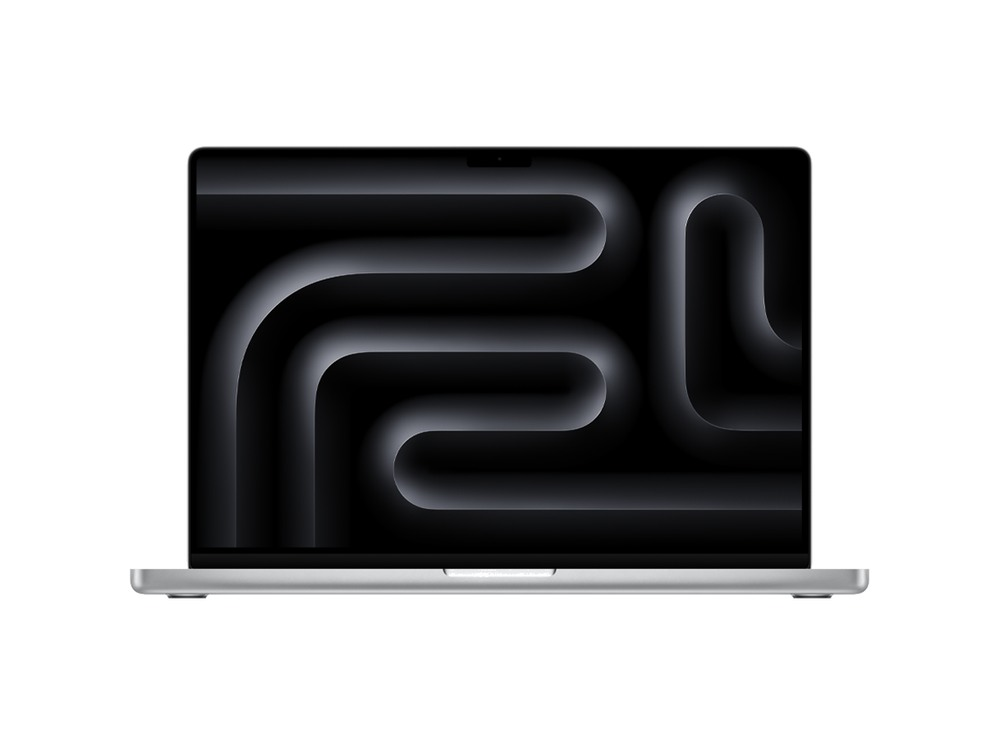

Ficha técnica
| Procesador | Apple M5 Pro · 18 núcleos |
|---|---|
| Gráficos | GPU integrada de 20 núcleos |
| Memoria | 24 GB unificada |
| Almacenamiento | 1 TB SSD |
| Pantalla | 16,2" Liquid Retina XDR · 120 Hz |
| Peso | 2,14 kg |
| Autonomía | 24 h según el fabricante |
| Sistema operativo | macOS |
| Precio | 3449 € orientativo |
Para quién es
Es de los mejores del catálogo en el trabajo intensivo: 99 de 100. Para jugar se queda en 70 de 100. Pesa 2,14 kg. Cuesta 3449 €, entre los cuatro más caros del catálogo.
- Encaja si lo que más te importa es trabajar todo el día, y el presupuesto llega a 3449 €.
- Busca otra opción si lo que prima es el gaming: aquí saca 70 de 100.
Notas por uso
Escala de 0 a 100. En el comparador se recalculan según el perfil que elijas. La nota global es 84 / 100, la media de los cuatro apartados.
Alternativas por precio
Los tres modelos del catálogo que más se acercan a su precio:
- MacBook Pro 14" (M5 Pro)−500 €
- MacBook Pro 14" (M5)−1220 €
- MacBook Pro 14" (M5 Max)+1400 €
Compáralo con otro modelo
Abre el comparador con este portátil ya cargado y enfréntalo a cualquiera de los 34.
Abrir el comparador